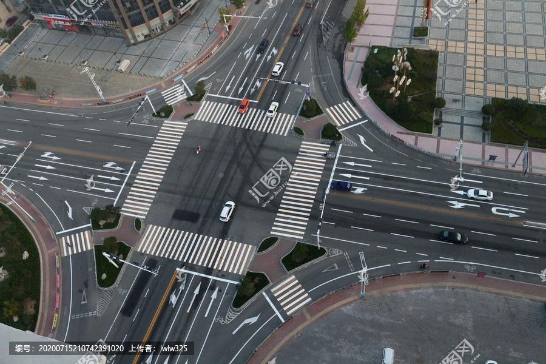
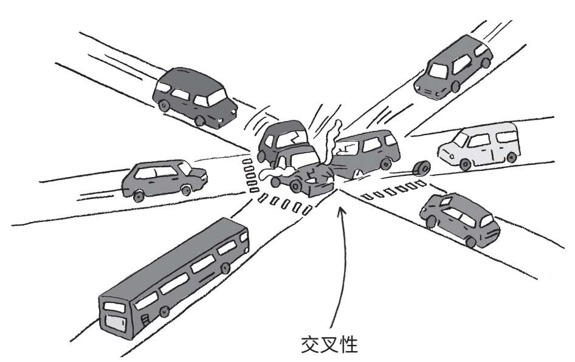

Intersectionality
交叉性
交叉性拓宽了女权主义第一波和第二波的视野，主要关注白人和中产阶级妇女的经历，包括有色人种妇女、贫困妇女、移民妇女和其他群体的不同经历。
交叉性女权主义旨在通过承认女性的不同经历和身份，将自己从白人女权主义中分离出来。
Intersectionality broadens the lens of the first and second waves of feminism, which largely focused on the experiences of women who were both white and middle-class, to include the different experiences of women of color, women who are poor, immigrant women, and other groups.
Intersectional feminism aims to separate itself from white feminism by acknowledging women's different experiences and identities.

交叉性的三个方面：
结构交叉性涉及非白人妇女如何以与白人妇女不同的方式经历家庭暴力和强奸。
政治交叉性研究了旨在促进平等的法律和政策如何矛盾地降低了暴力侵害非白人妇女的可见度。
最后，代表性的交叉性深入探讨了非白人女性的流行文化形象如何掩盖她们真实的生活经历
THREE ASPECTS OF INTERSECTIONALITY：
Structural intersectionality deals with how non-white women experience domestic violence and rape in a manner qualitatively different than that of white women.
Political intersectionality examines how laws and policies intended to increase equality have paradoxically decreased the visibility of violence against non-white women.
Finally, representational intersectionality delves into how pop culture portrayals of non-white women can obscure their own authentic lived experiences.

这些因素的例子包括性别、种姓、性别、种族、族裔、阶级、性、宗教、残疾、体重、外貌和身高。
这些相互交叉和重叠的社会身份可能既授权又压迫。
Examples of these factors include gender, caste, sex, race, ethnicity, class, sexuality, religion, disability, weight, physical appearance, and height.
These intersecting and overlapping social identities may be both empowering and oppressing.